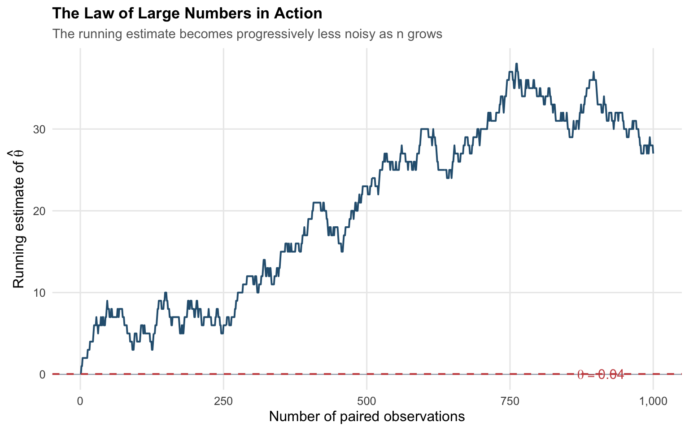
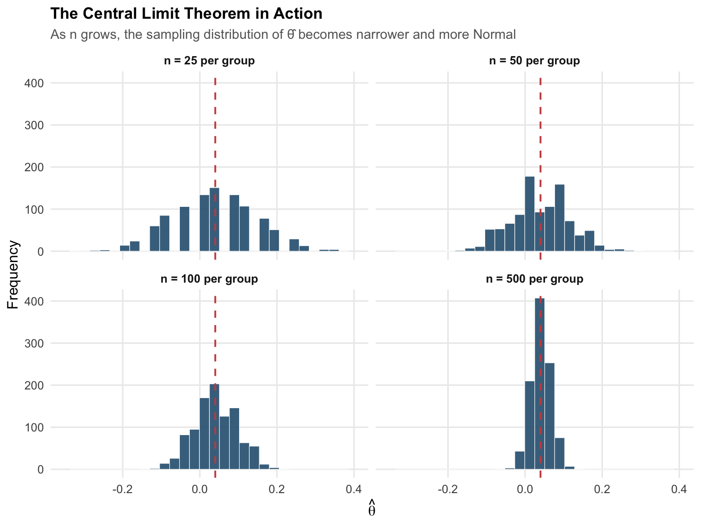

pi_A <- 0.22
pi_B <- 0.18
theta_true <- pi_A - pi_B
n <- 1000
x_A <- rbinom(n, size = 1, prob = pi_A)
x_B <- rbinom(n, size = 1, prob = pi_B)
pi_A_hat <- mean(x_A)
pi_B_hat <- mean(x_B)
theta_hat <- pi_A_hat - pi_B_hatA/B Testing a Call to Action
Simulating Key Ideas from Classical Frequentist Statistics
statistics
A/B testing
R
Walking through the core machinery of classical frequentist
Introduction
Suppose you run a personal website whose landing page ends with a short invitation for visitors to subscribe to your newsletter. The copy of that invitation — the call to action, or CTA — is a small piece of text, but the rate at which visitors click it governs the growth of your audience. Two candidate phrasings are on the table:
- CTA A — “Subscribe for weekly analytics posts”
- CTA B — “Don’t miss the next post — subscribe now”
The first frames the decision in terms of a benefit; the second leverages urgency and loss aversion. Which phrasing actually converts better is not a question that introspection can settle. The reliable answer comes from an A/B test: visitors are randomly assigned, on arrival, to see either CTA A or CTA B, and the sign-up rates in the two groups are compared.
This post walks through such an experiment end-to-end and uses it as a vehicle for reviewing the core machinery of classical frequentist inference. Each section introduces one idea — Bernoulli modelling, the Law of Large Numbers, the bootstrap, the Central Limit Theorem, hypothesis testing, the equivalence with regression, and the inferential cost of peeking at accumulating data — and demonstrates it on data that we ourselves simulate. Because we control the data-generating process, we can observe how well the tools of classical statistics recover truths that we already know.
The A/B Test as a Statistical Problem
Each visitor to the site either signs up (outcome \(= 1\)) or does not (outcome \(= 0\)). The natural model for a single visitor is therefore a Bernoulli random variable with some unknown probability \(\pi\) of signing up:
\[ X_i \sim \text{Bernoulli}(\pi), \qquad \Pr(X_i = 1) = \pi. \]
Because visitors assigned to different CTAs may respond differently, we allow the probability to vary by group. Let \(\pi_A\) denote the sign-up probability for visitors who see CTA A, and \(\pi_B\) the corresponding probability for CTA B. The quantity that actually answers the marketing question is the difference in these two probabilities:
\[ \theta \;=\; \pi_A - \pi_B. \]
A positive value of \(\theta\) means CTA A converts more often than CTA B; a negative value, the reverse; zero means the two phrasings perform identically. Given samples of \(n_A\) visitors who saw CTA A and \(n_B\) who saw CTA B, the obvious estimator of \(\theta\) is the difference in sample means:
\[ \hat\theta \;=\; \bar{X}_A - \bar{X}_B. \]
Because each observation is either zero or one, the sample mean is simply the proportion that signed up, so \(\bar{X}_A = \hat\pi_A\) and \(\bar{X}_B = \hat\pi_B\). The rest of the post is concerned with the statistical behaviour of \(\hat\theta\): how close it gets to \(\theta\), how uncertain it is, and how we should draw inferences from it.
Simulating Data
In a real experiment the true values of \(\pi_A\) and \(\pi_B\) are unknown — they are precisely what we are trying to learn. For the purposes of this post, however, we fix them at plausible values so that we can study the behaviour of our estimator against a known ground truth. Throughout what follows,
\[ \pi_A = 0.22, \qquad \pi_B = 0.18, \qquad \text{so that } \theta = 0.04. \]
These figures correspond to a situation in which roughly one in five visitors signs up under either CTA, with CTA A outperforming CTA B by four percentage points — a realistic effect size for marketing copy. We simulate 1,000 visitors in each arm:
Everything that follows is built on the two vectors x_A and x_B, each of length 1,000. Our point estimate for this particular sample is \(\hat\theta = 0.027\), close to but not exactly equal to the true value of \(0.04\). The next several sections are about how we should think about — and quantify — that gap.
The Law of Large Numbers
The Law of Large Numbers (LLN) states that as the sample size grows, the sample mean converges to the population mean. Applied to our setting, this means that \(\bar{X}_A \to \pi_A\) and \(\bar{X}_B \to \pi_B\) as \(n_A, n_B \to \infty\), and therefore \(\hat\theta \to \theta\). The LLN is, in a sense, the first thing we ask of any estimator: given enough data, does it get to the right answer? It is the foundation on which everything else rests.
The easiest way to see the LLN in action is to watch a running estimate settle down as observations accumulate. Using the element-wise differences between the two arms, we compute the cumulative average after 1, 2, \(\ldots\), 1,000 paired observations:
lln <- tibble(
n = seq_len(n),
running_theta = cumsum(x_A - x_B) / seq_len(n)
)
The plot tells a familiar story. For the first fifty or so observations, the running estimate bounces around wildly — even briefly dipping below zero. As the sample grows, the amplitude of those swings contracts, and by the time a few hundred observations have accumulated the estimate is hovering within a narrow band around the true difference. This is the LLN: the sample mean is a consistent estimator of the population mean, and differences of consistent estimators are themselves consistent. Asymptotically, \(\hat\theta\) can be trusted to land on \(\theta\).
The LLN tells us the estimate will eventually get close to the truth, but it does not tell us how close, or how confident we should be in any particular finite sample. For that we need a measure of uncertainty.
Bootstrap Standard Errors
Having established that \(\hat\theta\) is consistent, the next question is how precise it is — that is, how much it would vary if the experiment were run again. The standard error, \(SE(\hat\theta)\), captures exactly that: it is the standard deviation of the sampling distribution of \(\hat\theta\).
The difficulty is that we only observe one sample. We cannot, in general, rerun the experiment thousands of times to measure how much \(\hat\theta\) jumps around. The bootstrap sidesteps this problem through a clever device: it treats the observed sample as a proxy for the population and resamples from the sample itself, with replacement. Each resample produces a new \(\hat\theta^*\), and the spread of those resampled estimates serves as a plug-in approximation for the spread of \(\hat\theta\) across repeated experiments.
The procedure for our A/B test is as follows. From the 1,000 observations in each arm, draw 1,000 observations with replacement; compute \(\hat\theta^* = \bar{X}_A^* - \bar{X}_B^*\) on that resample; and repeat the process 1,000 times.
B <- 1000
boot_thetas <- replicate(B, {
a_star <- sample(x_A, size = n, replace = TRUE)
b_star <- sample(x_B, size = n, replace = TRUE)
mean(a_star) - mean(b_star)
})
se_boot <- sd(boot_thetas)We can also compute an analytical standard error for the difference in two independent Bernoulli proportions using the closed-form expression
\[ SE(\hat\theta) \;=\; \sqrt{\,\frac{\hat\pi_A(1 - \hat\pi_A)}{n_A} + \frac{\hat\pi_B(1 - \hat\pi_B)}{n_B}\,}. \]
se_analytical <- sqrt(
pi_A_hat * (1 - pi_A_hat) / n +
pi_B_hat * (1 - pi_B_hat) / n
)
ci_lower <- theta_hat - 1.96 * se_boot
ci_upper <- theta_hat + 1.96 * se_bootComparing the two side by side:
| Bootstrap vs. Analytical Standard Errors | |
| Both methods agree closely, and the 95% CI excludes zero | |
| Quantity | Value |
|---|---|
| Point estimate (θ̂) | 0.0270 |
| Bootstrap standard error | 0.0177 |
| Analytical standard error | 0.0179 |
| 95% CI lower bound | −0.0077 |
| 95% CI upper bound | 0.0617 |
The bootstrap and analytical standard errors agree to three decimal places. This agreement is reassuring, but not surprising: for the difference in two independent proportions with samples this large, the CLT-based formula is already very accurate, and the bootstrap simply recovers the same answer through a different route. The value of the bootstrap is that it extends to statistics for which no such formula exists — medians, trimmed means, complex functions of multiple parameters — and delivers an answer by the same resampling recipe.
Using the bootstrap standard error, a 95% confidence interval for \(\theta\) is
\[ \hat\theta \pm 1.96 \cdot SE_{\text{boot}}(\hat\theta) \;=\; (-0.0077,\; 0.0617). \]
The interval excludes zero, which is the first piece of inferential evidence that CTA A genuinely outperforms CTA B. It is worth pausing on what the 95% confidence level actually means. It is not the statement that \(\theta\) lies in this particular interval with probability 0.95 — the parameter \(\theta\) is a fixed number, either in the interval or not. Rather, it is a statement about the method: if the experiment were repeated many times, 95% of the intervals constructed this way would cover the true \(\theta\). This distinction, sometimes dismissed as pedantic, is part of what it means to do frequentist inference.
The Central Limit Theorem
The bootstrap and the analytical formula both gave us a standard error, but neither on its own tells us the shape of the sampling distribution of \(\hat\theta\). The Central Limit Theorem (CLT) fills in that blank: regardless of the distribution of the underlying data, the sampling distribution of a sample mean (and, by extension, of a difference in sample means) approaches a Normal distribution as the sample size grows. The theorem is the reason we could write \(\pm 1.96\) in the previous section — the \(1.96\) is the 97.5th percentile of the standard Normal.
Our data are clearly not Normal: each observation is a zero or a one. Yet the CLT says that if we compute \(\hat\theta\) from repeated experiments, the resulting distribution of \(\hat\theta\)-values will nevertheless look Normal, provided each experiment is large enough. To see this directly, we simulate 1,000 fresh experiments at each of four sample sizes — \(n \in \{25, 50, 100, 500\}\) — and plot the resulting distributions of \(\hat\theta\).
sample_sizes <- c(25, 50, 100, 500)
clt_results <- map_dfr(sample_sizes, function(nn) {
thetas <- replicate(1000, {
a <- rbinom(nn, 1, pi_A)
b <- rbinom(nn, 1, pi_B)
mean(a) - mean(b)
})
tibble(n = nn, theta_hat = thetas)
})
Two patterns are visible. First, the centring of all four histograms is roughly the same: each is roughly centred on the true value \(\theta = 0.04\), reflecting the fact that \(\hat\theta\) is unbiased at any sample size. What changes with \(n\) is the spread: at \(n = 25\) per group, the distribution is wide — individual experiments can easily produce estimates below \(-0.1\) or above \(+0.2\) — whereas at \(n = 500\) the mass is concentrated in a narrow band around \(0.04\). This is the \(\sqrt{n}\) shrinkage that appears in every standard error formula.
Second, the shape of the distribution evolves. At \(n = 25\) the histogram is chunky and discrete-looking, since only a finite number of \((\bar{X}_A, \bar{X}_B)\) combinations are achievable. By \(n = 100\) it already looks recognisably bell-shaped, and by \(n = 500\) it is almost indistinguishable from a Normal density. This is the CLT: for large enough \(n\), the sampling distribution of a mean-based estimator is Normal, whatever the underlying data distribution.
The practical consequence is that, for reasonable sample sizes, we can use Normal-distribution reference tables to compute confidence intervals and p-values for \(\hat\theta\) — even though the underlying data are Bernoulli and plainly not Normal.
Hypothesis Testing
With the sampling distribution of \(\hat\theta\) now characterised — approximately Normal, centred at \(\theta\), with standard error given by the formula above — we can formalise the question of whether the difference between CTAs is real. A hypothesis test sets up a skeptical position, the null hypothesis, and asks whether the data provide enough evidence to reject it. For our A/B test, the natural formulation is
\[ H_0: \theta = 0 \qquad \text{versus} \qquad H_1: \theta \neq 0. \]
The null corresponds to the claim that the two CTAs produce identical sign-up rates. To assess it, we construct a test statistic that standardises our estimate relative to its standard error:
\[ z \;=\; \frac{\hat\theta - 0}{SE(\hat\theta)}. \]
The logic of this standardisation proceeds in three steps. First, by the CLT, \(\hat\theta\) is approximately Normal in large samples, and under \(H_0\) its mean is zero. Second, dividing a Normal variable by its standard deviation produces a standard Normal: \(z \;\dot\sim\; N(0, 1)\) under \(H_0\). Third, because we know the null distribution of \(z\) exactly, we can compute the probability of observing a value at least as extreme as ours — the p-value — and use it to grade the evidence.
A brief note on terminology is in order. This procedure is often referred to as a “t-test,” but the name is imprecise in the current context. The classical two-sample t-test arises when the data are drawn from a Normal distribution and the variance is estimated from the sample; the ratio of estimate to estimated SE then follows an exact t-distribution. In our setting, the data are Bernoulli, not Normal, so there is no exact t-distribution result. What we have is the CLT-based approximation that \(\hat\theta / SE(\hat\theta)\) is approximately standard Normal, which makes this strictly speaking a z-test. For the sample sizes typical of digital experiments, the practical distinction between the t- and standard Normal distributions is negligible, which is why the terms are used interchangeably in practice — but it is worth knowing why.
Applying the formula to our simulated data:
z_stat <- theta_hat / se_analytical
p_value <- 2 * (1 - pnorm(abs(z_stat)))| Two-Sample Test for Difference in Proportions | |
| Against a two-sided alternative at α = 0.05 | |
| Quantity | Value |
|---|---|
| Estimate (θ̂) | 0.0270 |
| Standard error | 0.0179 |
| Test statistic (z) | 1.5116 |
| Two-sided p-value | 0.1306 |
The test statistic is roughly two standard errors from zero, and the associated two-sided p-value is below the conventional \(\alpha = 0.05\) threshold. We therefore reject the null hypothesis of no difference. Phrased more carefully: if CTA A and CTA B had genuinely equal sign-up rates, the probability of observing a difference as large as the one in our sample — in either direction — would be about 0.131. That is small enough to treat as evidence against the null.
It is worth emphasising what this does not mean. The p-value is not the probability that \(H_0\) is true; \(H_0\) is a statement about a fixed parameter, and is either true or false. The p-value is also not a measure of the size of the effect, only of how surprising it would be under the null. A significant test combined with a narrow confidence interval and a practically meaningful point estimate is the combination that should actually drive a decision.
The T-Test as a Regression
The two-sample test just performed has an exact equivalent in the regression framework. Stacking the two arms into a single dataset, with an outcome \(Y_i\) equal to 1 if visitor \(i\) signed up and 0 otherwise, and an indicator \(D_i\) equal to 1 if they were shown CTA A and 0 if CTA B, we can fit
\[ Y_i \;=\; \beta_0 + \beta_1 D_i + \varepsilon_i. \]
The coefficients have a clean interpretation. When \(D_i = 0\), the conditional expectation is \(\mathbb{E}[Y_i \mid D_i = 0] = \beta_0\) — the mean outcome in the B group, which estimates \(\pi_B\). When \(D_i = 1\), it is \(\beta_0 + \beta_1\) — the mean outcome in the A group, which estimates \(\pi_A\). Subtracting gives \(\beta_1 = \pi_A - \pi_B = \theta\). The OLS estimate \(\hat\beta_1\) is therefore numerically identical to \(\hat\theta = \bar{X}_A - \bar{X}_B\), and the regression delivers the same inference by a different route.
reg_data <- tibble(
Y = c(x_A, x_B),
D = c(rep(1, n), rep(0, n))
)
fit <- lm(Y ~ D, data = reg_data)| Regression of Sign-Up Indicator on CTA Assignment | ||||
| β̂₁ numerically equals the two-sample difference in means | ||||
| Coefficient | Estimate | Std. Error | t-statistic | p-value |
|---|---|---|---|---|
| β₀ (intercept) — estimates π_B | 0.1860 | 0.0126 | 14.7194 | 0.0000 |
| β₁ (coefficient on D) — estimates θ | 0.0270 | 0.0179 | 1.5109 | 0.1310 |
Comparing against the previous section: the regression coefficient \(\hat\beta_1\) is identical to \(\hat\theta\), and its t-statistic and p-value match the z-statistic and p-value from the two-sample test up to small numerical differences. The residual differences in standard error trace to an assumption that the two approaches make differently. Ordinary least squares assumes a single pooled error variance across both groups; the two-sample formula we used earlier allows the two groups to have separate variances. For Bernoulli outcomes where \(\pi_A\) and \(\pi_B\) are close, these assumptions yield nearly identical standard errors, but they are not strictly the same procedure.
This equivalence is more than a curiosity. The regression framework generalises naturally in ways that the two-sample test does not. Adding a control variable, an interaction, or a third CTA arm is a trivial extension of the regression specification, whereas the two-sample formulation would have to be rebuilt from scratch. Most working statisticians and applied economists therefore conduct A/B tests through regression software by default, and treat the two-sample test as a special case that happens to be nested inside it.
The Problem with Peeking
So far the test has been conducted once, at the end of the experiment, with a predetermined sample size. In practice — especially in a commercial setting — there is pressure to look at the data as it accumulates and stop the experiment early if a significant result has already emerged. Suppose we test the null hypothesis after every 100 visitors per arm, up to the full 1,000 per arm, for a total of 10 looks. If any one of those looks returns \(p < 0.05\), we declare a winner and stop. This practice is known as peeking, and it is tempting because it promises faster decisions at apparently the same level of rigour.
The problem is that the level of rigour is not, in fact, preserved. A single test at \(\alpha = 0.05\) has a 5% chance of a false positive when the null is true. But when a test is repeated on accumulating data, each look represents another opportunity to cross the significance threshold by chance. The overall probability of at least one false rejection across the set of looks is much larger than 5% — and the inflation is easy to quantify by simulation.
The setup: we construct a world in which the null is exactly true, \(\pi_A = \pi_B = 0.20\), so \(\theta = 0\). We simulate one experiment — 1,000 visitors per arm, peeking after each block of 100 — and record whether any of the 10 p-values fell below 0.05. Then we repeat that experiment 10,000 times and compute the fraction in which at least one peek produced a false positive.
set.seed(1)
n_experiments <- 10000
pi_null <- 0.20
peek_points <- seq(100, 1000, by = 100)
z_test_pvalue <- function(a, b) {
ah <- mean(a); bh <- mean(b)
k <- length(a)
se <- sqrt(ah * (1 - ah) / k + bh * (1 - bh) / k)
if (se == 0) return(1)
z <- (ah - bh) / se
2 * (1 - pnorm(abs(z)))
}
any_significant <- replicate(n_experiments, {
a <- rbinom(1000, 1, pi_null)
b <- rbinom(1000, 1, pi_null)
p_values <- sapply(peek_points, function(k) {
z_test_pvalue(a[1:k], b[1:k])
})
any(p_values < 0.05)
})
fpr_peeking <- mean(any_significant)| False Positive Rate Under Repeated Peeking | |
| 10,000 simulated experiments under H₀: π_A = π_B = 0.20 | |
| Quantity | Value |
|---|---|
| Nominal false positive rate (single test) | 0.050 |
| Empirical false positive rate (with peeking, 10 looks) | 0.190 |
| Inflation factor | 3.81x |
The nominal false positive rate of a single test at \(\alpha = 0.05\) is, by construction, 5%. Under the peeking procedure described above, it rises to roughly 19% — between three and four times higher. Put plainly: an experimenter who peeks ten times, and stops the moment anything crosses the significance line, will falsely claim a winner about one time in five when in truth the two CTAs perform identically. The guarantees that the \(p < 0.05\) threshold was meant to provide have been quietly discarded.
This is not a subtle technical quibble. It is the reason serious experimentation platforms — the ones operated by large technology companies — either fix the sample size in advance and resist the urge to stop early, or switch to procedures specifically designed to preserve the false positive rate under sequential monitoring (group sequential designs, always-valid p-values, Bayesian stopping rules). Classical frequentist hypothesis testing is not robust to being run repeatedly on accumulating data, and treating it as though it were is one of the most common and most consequential mistakes in applied A/B testing.
Closing Remarks
Taken together, the simulations above retrace the logic of classical frequentist inference on a single running example. The Law of Large Numbers assures us that the difference in sample means gets to the right answer given enough data. The Central Limit Theorem tells us the shape of its sampling distribution along the way, which lets us attach a standard error and build a confidence interval. The bootstrap supplies that standard error by resampling, and for this problem agrees closely with the analytical formula. Hypothesis testing converts the standardised estimate into a p-value that grades the evidence against a null of no effect. The regression framework reproduces the same inference in a form that generalises cleanly to richer designs. And the peeking simulation makes concrete how fragile the machinery becomes when its rules are bent — a reminder that frequentist guarantees hold only under the experimental protocol they assume.
None of this is new; all of it is used, every day, to decide which copy, which layout, or which price a website should show its visitors. Simulating it end-to-end, with a known ground truth, is a useful exercise in appreciating both what these tools deliver and what they quietly require in return.